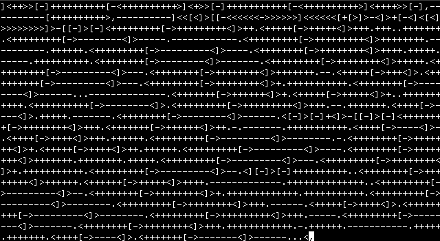

“A career in CS is a chance to build things. If you can dream it, CS can help you do it!”
Alice Steinglass, President, Code.org
Computer Science lets us use technology to solve today's problems*
So What is Computer Science Anyway?
Let's define what it's not. It's not Information Technology, so it's not about setting up networks or fixing computers. Although you will have an easier time majoring in Computer Science if you can fix your own computer when it (inevitably) has problems.
It's not really about writing software either, although programming is something you will spend a lot of time doing, and most CS grads will pursue careers in software engineering.
Computer Science isn't really about computers
CS is as much about computers as biology is about microscopes, or astronomy is about telescopes, or writing is about pens. Computers are just tools. So what is Computer Science really about then?
Computer Science is about Problem Solving
Computers are tools that allow us to solve problems more efficiently. CS is about understanding problems (and solutions) at a deep level. How complex is a particular problem? Can it even be solved? How long would it take? Can it be broken apart into smaller problems? What steps need to be taken to solve it, and can it be done in fewer steps? How much in terms of resources does it take to solve?
Computers Are Just a Tool
People: Smart (not me tho) but Slow
- Take too long to do math, too easy to make mistakes
Computers: Very Dumb but Very Fast
- Can do lots of math really quick and remember lots of variables
Do You Need a CS Degree?
Some software development jobs are like plumbing: you work with tools you didn’t make to combine components you didn’t create in order to build something for a customer.
Computer Science as an academic discipline is more focused on the theory than the practice of software development, although you certainly will learn plenty of things that are useful in your software engineering career.
People can and do work as programmers without CS degrees, but understanding the low-level details and math that go into everything helps you produce better work and advance in the field.
We Use Math, but CS is Not a Branch of Mathematics

The math requirements of a CS degree scared me away from enrolling for a long time. It turns out that if you are good at the sort of analytical, step-by-step thinking that helps make a good programmer, you can probably handle the math. I survived it. You can too!
Programming Languages
To make computers useful we have to be able to give them instructions. Computers only understand 1's and 0's (binary or machine code) though, and it's hard for people to write in that. So, programming languages were created to make being a software developer easier.
Instead of writing 1's and 0's we can use words and let the language tools convert them into binary for us. Programming languages are somewhere in-between human languages like English, and machine language. They are meant for people to write and read, and for tools likes compilers to convert into computer-readable machine code.
This is Margaret Hamilton at NASA demonstrating what you end up with when you write everything in machine language:

Here's an example of the Python programming language, which is beginner-friendly and has tons of tutorials online. I highly recommend it as a first language. This code checks if a number is divisible by 3 or 5. If it's divisible by both, it prints "FizzBuzz" to the screen. If it's only divisible by 5 or 3, it prints "Buzz" or "Fizz" respectively.

Computer Science at Syracuse University
New engineering students at Syracuse University are expected to take 17 credit-hours during their first semester, and professors suggest spending at least as much time outside of a class as you do in it, for every course you take. Harder courses require much more time working outside of class.
This is an exaggeration, but it's not that far from the truth.
What CS Students Learn
Here's a thought experiment. Let's say you parked your car at 9 PM and left your laptop in the backseat. At 9 AM you return to discover there's broken glass everywhere, someone smashed your car window and grabbed your stuff. How would you search through security camera footage to find the exact time a break-in happened in the middle of the night?
- A - Start watching from the beginning until you see the break-in
- B - Skip through the video randomly until you see the break-in
- C - Some other option?
Divide and Conquer Algorithm
One approach to this problem is called Divide and Conquer. Here's how it works: you keep reducing the possible timeline the break-in occurred by half until you've found the exact time it happened.
You have 12 hours of security footage to search through?
- Start Halfway (6 hours): Do you see broken glass? Jump to half the first half (3 hours in)
- No broken glass? Skip to halfway through the rest of the video (9 hours in)
There are different algorithms for different problems. Understanding the trade-offs different algorithms make in terms of things like:
- the time they take
- the resources they require
- how they scale as the problem gets bigger
A Simple Cryptography Algorithm
Cryptography is about keeping things secret, and is one of the topics Computer Science students can study later on. Here's a simple example of a cryptographic algorithm called rot13, where each letter is switched with one 13 positions away in the alphabet. It's useless for actual security, but helps teach the concept of cipher text.
Arire tbaan tvir lbh hc Arire tbaan yrg lbh qbja Arire tbaan eha nebhaq naq qrfreg lbh Arire tbaan znxr lbh pel Arire tbaan fnl tbbqolr Arire tbaan gryy n yvr naq uheg lbh
You can decode that secret message by hand or by pasting it into rot13.com. Give it a try and see what it says!
SU Course Requirements
Students majoring in Computer Science at SU have several required courses, a lot of choices to make in upper-level electives, and plenty of courses in non-CS topics to help round things out.
At SU you'll need to take:
- 47 credits of general education courses
- Only 3 credits in Communications – we probably need more
- Physics 1 and another Natural Science course (like Physics 2)
- 21 credits in the Social Sciences and Humanities including Logic and Ethics
- 15 credits Math
- Calculus 1
- Calculus 2
- Calculus 3 OR Linear Algebra
- Statistics
- 34 credits of core courses, which includes:
- Network Programming
- Discrete Mathematics
- Algorithms
- Data Structures
- Operating Systems
- 18 credits of upper division electives, such as:
- Cybersecurity
- Robotics
- AI
- Quantum Computing
- Cryptography
- VR/AR
While there is a focus on math and fundamentals like algorithms and data structures the classes still include plenty of content on the tools and practices that working software developers use.
It's worth noting that public speaking and presentation skills are mentioned on several of the job postings on Handshake, and Professor J.P. Marum suggested that CS students would benefit from developing their public speaking skills. This is deeply unfortunate for me because I’m super awkward, but good for new students to know. SU requires CS majors take at least one communications class, which can include public speaking.
Practical Experience: Research & Internships
Many of the professors at SU are involved in research in topics ranging from artificial intelligence, drones and robotics, to blockchain security. Students have the opportunity to get involved in that work, which is super cool and you should totally do it. I'm involved in a research project working on detecting flooding using sensors, including thermal cameras, and that's been a great learning experience.
There are plenty of clubs and other activities on campus to get involved in and get practical experience in programming or other skills. Events like CuseHacks and Invent@SU are competitions you should check out.
There are lots of active student organizations within tech at SU, including a drone club, robotics club, and blockchain club, and the IEEE standards organization has a student branch here too.
After Graduation
According to Professor Marum, 97% of computer science students either find employment after graduating or pursue graduate degrees. “There are lots of places for people to work, we don’t put as many students into the market as we should.” Syracuse graduates “usually go to major companies like Meta (formerly Facebook) Lockheed Martin is nearby, a large percent go on to graduate school here or elsewhere.”
According to a post on the ECS news site the average starting salary across majors for graduates in the the class of 2022 was $76,679.
What is the Culture of Computer Science Like?
Don't call it "coding", that's what your patients would be if you were a doctor
Professor Marum, who teaches the required CIS 252 Elements of Computer Science course (which everyone calls the Haskell course, because that's the language taught), likes to say computer scientists are lazy. There is some truth to this, the whole point of having computers is that they can do annoying repetitive work for us.
The job of a programmer is to tell the computer how to do all that work. One example of laziness that is actually a good practice in programming is called DRY: Don't Repeat Yourself. Instead of re-writing the same instructions over and over, when you want the computer to do a task multiple times just bind those instructions to a function. In group projects tasks are broken into pieces that can be put together to accomplish the goal. This makes it easier for students to work together, and is good practice for how work is done in the real world.

Professional Advice from a Software Engineer
I interviewed Baljeet Sandhu, a software engineer who has decades of experience and worked at companies like Google and Bank of America. Here are some of his thoughts.
Q: What would you say the culture in software engineering is like? What sorts of traits or qualities in people are valued, and what attributes are not valued?
A: "Culture varies a bit by country and the type of business the organization is in. In general self-driven people willing to take on problems and provide solutions are in demand. Attention to detail and being able to persevere until you find a good solution is good. Be open to learning always, since things move fast. Being a good team player is valuable. Pull your weight and put some effort in getting along with your team. It makes life better and work more fun."
Q: What are people in the industry like to work with, and what do managers value in employees? How important are technical skills vs. people skills?
A: "Good engineers are typically analytical people who like to think about the situations logically. The industry has a good mix of people and the stereotype of a computer programmer is not valid anymore. People come to IT from diverse backgrounds and there are plenty of ambitious and articulate engineers. Technical skills are more important in your early years since you are generally working with senior mentors who assign you technical objectives. As you mature people skills become important. At the end of the day software is written to solve a problem for someone. We need to talk to that person and have a lot of back and forth dialogue to design good solutions. In larger projects you also have to communicate effectively with other teams and disciplines like UI designers, Quality Assurance and project managers. Good engineers generally have a balance of tech and people skills. However, if you are so inclined you can get very far on technical skills alone."
Q: What is the diversity like in the industry? Are there more women working in the field than in previous years?
A: "It's a mixed bag. There are great engineers from different cultures and countries. Talent remains a great equalizer. Software development tends to be male dominated. The gender ratio is better (in) requirements analysis, project management and testing functions. However, there are great women engineers around. In fact the first team I trained on was co-incidentally all women."
Q: What advice or comments do you have for freshmen students in computer science?
A: "Observe everything carefully around you and investigate anything which is new or unfamiliar. Be learning new things continuously. Offer to help when opportunity arises, do not wait to be told to do things. Aim to master your craft, set a high quality bar for yourself. Do not take Google shortcuts, try to get a deep understanding of the tech you are working on. Be humble and keep an open mind to new and different ideas and people. Find a good mentor. Watch how they work and frequently ask for feedback on your own work."
On Humor in CS
A lot of computer scientists have a strange sense of humor. Here's an example of some code written in the programming language called Brainf**k. This was created more as a brain teaser than a practical tool, but shows creativity. The fact someone would invest the time in creating a language that is so difficult to read, just for fun, says something about CS. I'm not entirely sure what though.

One programmer got tired of reading job ads calling for "rockstar programmers" so he created a programming language called Rockstar where all the code reads like nonsensical song lyrics.

Now compare those languages to something actually useful: Try programming in Python! It's not that hard. Click the little play button to see what happens. Now what happens if you swap "green" and "blue" and then click run again?
What happens if you change the 50 to 10? Mess with it and see what happens, that's what most software engineers do anyway.
CS Values
Quirks aside, Computer Science as a discipline values:
- Attention to Detail: 1 character in the wrong place can break everything
- Analytical Thinking: being able to break down large problems
- Determination and patience: finding and fixing bugs can be a struggle
- Real-world work: completed projects, research, internships
- Cooperation and Teamwork: most software developers work in teams
- Learning how to learn: because tech is always changing you must always be developing your skills
Issues With the Culture of CS
Ada Lovelace is considered the first computer programmer for her work on Charles Babbage's Analytical Engine. Her writing on the topic helped distinguish computer science ("the science of operations") from mathematics. A programming language is named for her, and Nvidia named its most recent gaming graphics cards after her. Other women have made important contributions to our field. Yet today women are underrepresented in computer science. According to the Office of Inclusive Excellence at the college of Engineering and Computer Science here at SU, the faculty in the college is disproportionately represented by white and Asian men in comparison to the student population. Efforts are being made to widen the search for faculty, but this will take time. The Office of Inclusive Excellence also found that women received much less research funding than men.
The lack of diversity in STEM in general and computer science in particular has consequences for the culture of the field. The popular perception of "Brogrammer" culture drives away talent and encourages bright people to enter other disciplines.
Most people have heard of Steve Jobs and Bill Gates, but here are a few important figures I think more Computer Science students should know about:
Grace Hopper
Admiral Grace Hopper worked on the first all-electronic computer in the United States, invented the compiler (a tool that makes programming computers much easier), helped develop Cobol, one of the first standard programming languages, and wrote the operating manual for the Navy's Mark I computer (because she understood it better than everyone else). Fun fact: the term computer "bug" comes from the time she found a moth stuck in the Mark I computer. The Navy named a guided-missile destroyer after her.
Lynn Conway
Lyn Conway worked on technologies called VLSI that changed the way people designed computer chips in what was termed the Mead-Conway Revolution. She taught the first VLSI course at MIT and today that approach to chip design is the standard. SU has an upper-division course on VLSI. IBM fired her for being trans and apologized decades later.
Margaret Hamilton
Margaret Hamilton led the development of the flight software onboard the Apollo missions to the moon. She also helped define software engineering as a discipline. She was awarded the Presidential Medal of Freedom for her contributions to the successful landing of Apollo 11. The stacks of paper she is standing next to in the famous photo are printouts of the flight software she and her team wrote for the Apollo Lunar module and Command module.
Sophie Wilson

Sophie Wilson helped develop the Acorn Risc Machine, which was the basis of modern ARM processors that all smartphones and new Macs use. Her instruction set design for the processor in that computer used a minimal amount of electricity and it was that efficiency which set ARM up to become the most widely used CPU on the planet.
The End
In conclusion, the culture of computer science can be summed up with:
- the good
- Culture promotes persistence, patience, self-teaching, and constantly growing your skills.
- The impact of the free software/open-source movements means there's plenty of example code out there to learn from, free documentation and tutorials are abundant, so anyone can build something cool and share it with the world.
- the bad
- Real issues with diversity that have only started to be addressed
- Recent efforts to improve culture have a long way to go
- You're gonna read that friendly manual cover to cover
- and the ugly attempts at dancing
- Behold the founders of Microsoft celebrating the launch of Windows 95 - I had to watch this and now you do too.
You saw that. You can't unsee it. I'm so sorry.
Would I Change My Major?
No.